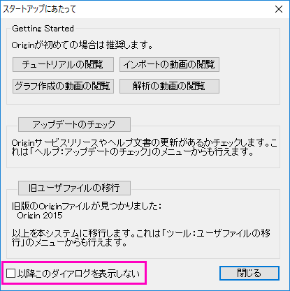
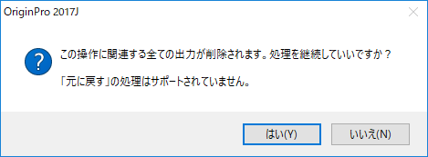

FAQ-883 警告メッセージのダイアログを表示しない方法はありますか？
Suppress-WarningMessage
最終更新日:2017/7/13
操作の実行や変更、削除を行うとき、Originは様々な警告メッセージ（スマートヒントを含む）を表示します。これらのメッセージを表示したくない場合、非表示にするためのいくつかの方法があります。
次回からこのメッセージを出さないオプションのあるダイアログ
- 警告メッセージのいくつかは、下に「次回からこのメッセージを出さない」というチェックボックスがあります。これを選択すれば、そのメッセージダイアログは表示されなくなります。
- 
- 「再度尋ねることも必要ありません」オプションのある警告メッセージは、選択された設定に従います。

 |
上述の2つのケースは、ヘルプ：確認メッセージの復活メニューで再度メッセージダイアログを有効にできます。
|
スマートヒント
- スマートヒントを非表示にするには、このクイックヘルプのページを確認してください。スマートヒントを再度表示するようにしたい場合、ヘルプ：全てのヒントの復活メニューを選択します。
操作の削除に対する警告メッセージ
- ワークブックやグラフの分析操作を削除する場合、削除を実行して良いか尋ねるメッセージダイアログが表示されます。これを非表示にするには、システム変数@DOMを1にセットします。
- 
- Originメニューからツール：システム変数を選択します。
- 変数にDOMを入力し、値を1にセットします。
キーワード:緑の鍵を削除, 警告を非表示にする